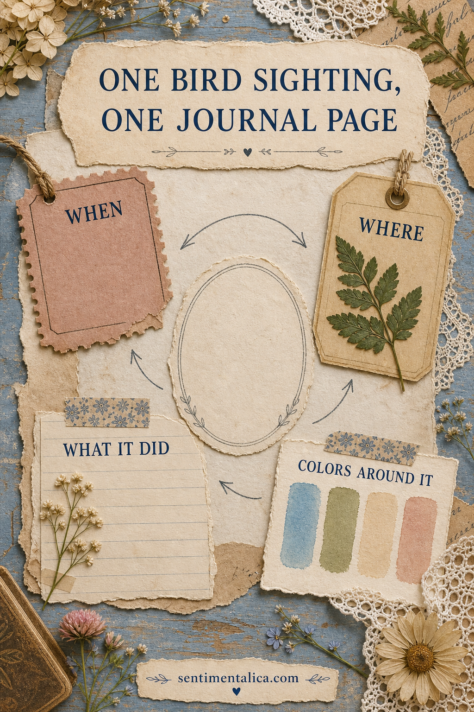
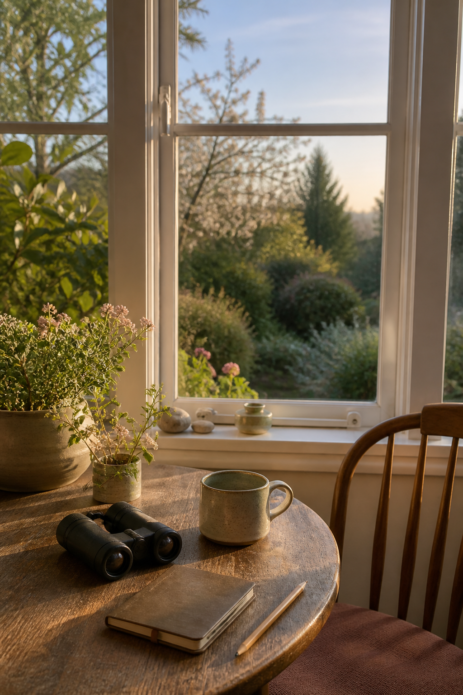
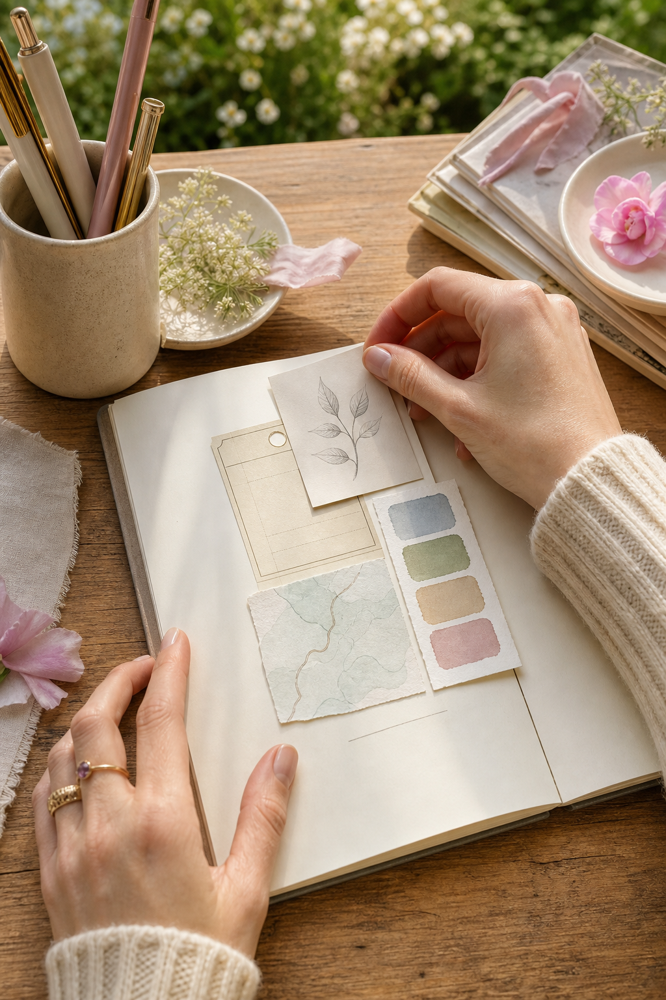

Bird journal inspiration becomes more personal when the page begins with a real moment instead of a perfect bird picture. You do not need to identify every species or draw feathers accurately. One ordinary sighting can give you a complete page when you notice when it happened, where the bird was, what it did, and what the world around it looked and sounded like.

Write the moment before the name
Start with the easiest facts: time, weather, place, and distance. Write “after breakfast, light rain, on the balcony rail” before worrying about the species. These details make the page yours. A copied identification label can be useful later, but it cannot replace the moment you actually noticed.
If the bird leaves quickly, record three words in your phone or on a scrap of paper. Shape, movement, sound. “Round, hopping, sharp call” is already enough to bring the sighting back when you sit down to journal.
Record one behavior
Behavior gives a page its small story. Was the bird pulling at moss, waiting beside a puddle, turning its head toward a sound, carrying grass, or arguing with another bird? Choose one action and place it at the center of the entry.

A short sentence is enough: “It returned to the same branch three times.” Leave space around it. You can add an arrow, a tiny map, or three pencil marks to show movement without drawing a detailed illustration.
Borrow color from the place
Instead of matching only the bird's plumage, look at the whole setting. A gray bird against wet brick might give you slate, rust, rain blue, and pale mortar. A brown bird in a garden could lead to lichen green, soil, faded rose, and cream. The surrounding colors often create a more interesting and truthful page.
Choose four colors: one dark anchor, one light paper color, one middle tone from the habitat, and one tiny accent. This keeps the page calm even when you include writing, a map, and a small image.
Use evidence, not decoration
A bus ticket from the day, a tea label from breakfast, a sketch of the window, or a photocopy of a leaf from the same place can support the story. The object does not have to show a bird. It only needs to belong to the moment.

Avoid collecting active nests, eggs, or feathers from protected places. A photograph, quick sketch, written description, or naturally shed garden feather can preserve the memory without disturbing wildlife. The journal is strongest when attention is the main material.
Try a simple one-sighting layout
- Top left: date, time, and weather.
- Center: one sentence about behavior.
- Side edge: a tiny map or line showing movement.
- Bottom: four habitat colors and one remembered sound.
- Back of the page: the species name, only if you confirm it later.
This structure works with a blank notebook, scraps, or printable paper. If you want a gentle starting material, the 100 free floral pictures can provide leaves and small botanical details for the habitat. Choose only one or two so the observation remains the focus.
You do not need a rare bird or a perfect photograph. Notice one living thing for thirty seconds, write down what changed, and let the page hold the encounter rather than decorate over it. Find more quiet prompts and visual journal ideas in the Sentimentalica journal.